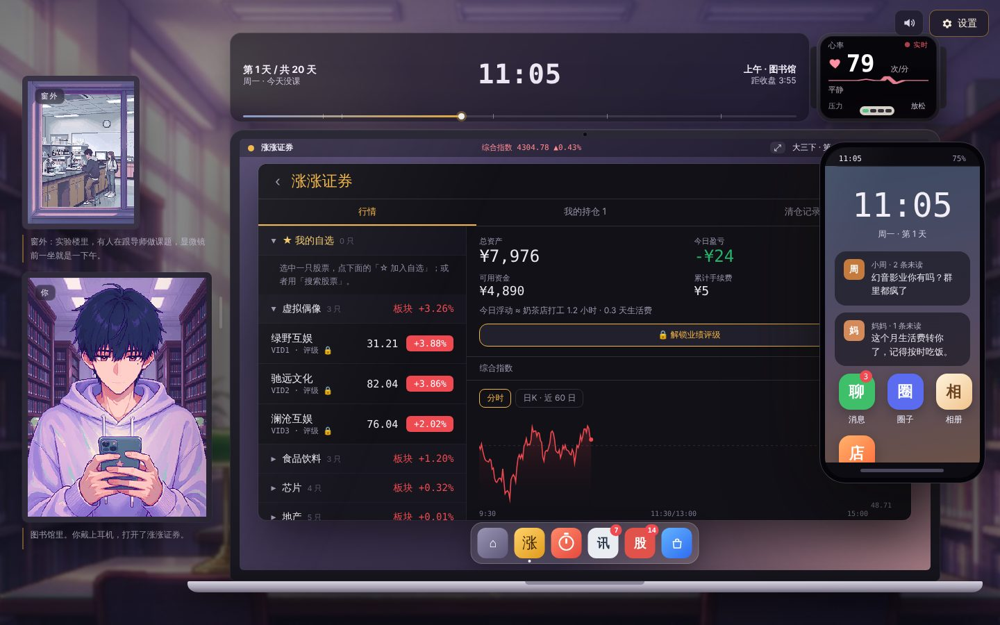
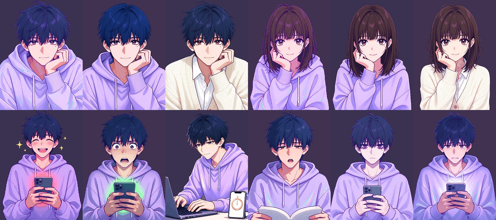

先建模型，再写代码
灵感先进库、打分、算化学反应，再决定做什么。后来加的「附近好店」「借贷与配资」，也先问同一个问题：它服务「反赌博」这个主题吗？刺激可以加，代价必须跟着来。
大三下学期，考研、实习，还有室友推荐的炒股软件。二十个交易日里，玩家用同一份注意力在三条路之间做选择。行情会涨回来，时间和身边的人不会。
策划与制作：本人 · 程序、文案与美术提示词：Claude · 美术：AI 图像模型 · 2026 年 10 月

背景、做法、产出，以及我怎么用 AI。
项目背景：独立游戏创作常卡在三处：灵感零散、设定前后冲突、做出来不确定有没有人想玩。本项目面向个人独立开发和小团队，以「反赌博主题的炒股人生模拟」为题材，用 AI 搭建从灵感沉淀、评估到可玩原型的完整流程。
具体工作：
产出：
我如何用 AI：
每一条灵感都先过这四步，再决定做不做、做成什么样。
零散的想法统一成同一种格式：机制标签、七维评分、参考先例、风险、复杂度。
44 条灵感两两比对：互相强化加分；同一个标签抢玩家同一份注意力，扣分。人工判定优先于规则。
13 个标签 · 52 条判定七个加权维度，主题服务权重最高；先例口碑按验证过的时长打折，机制越泛滥扣得越多。
S ≥ 80 · A ≥ 70 · B ≥ 60分数变成权重，不删除；新灵感进来，仍能和旧灵感起反应。复杂度预算 12 点，防止范围失控。
保留 26 · 候选 17 · 搁置 1分数来自评估报告；右边一列是它在游戏里的实际做法。
| ID | 灵感 | 单体分 | Demo 里的样子 |
|---|---|---|---|
| I34 | 落差倍数驱动身心刺激 | 87.5S | 账户浮动换算成「奶茶店打工几小时、几天生活费」，同时推高手表上的心率和压力；看着亏比看着赚难受得多。 |
| I43 | 妈妈的手机 + 跨周目记忆 | 86.8S | 一周目炒股亏过钱、又看过妈妈那条帖子，二周目开局可以用八千块里的七千给妈妈买手机，走向「妈妈结局」。 |
| I31 | 大三的三岔路 | 84.5S | 考研、实习、炒股共用一天的时间；番茄钟、实习作品、行情抢的是同一份注意力。 |
| I19 | 加速看盘＝现实时间流失 | 83.5S | 专注越久时间过得越快，走神、盯盘时间变慢；连续专注会翻倍提速。 |
| I32 | 快乐阈值漂移 | 83.0S | 吃过好的，便宜的快乐不再管用；用账面盈利消费，价格开始被看成「今天赚的百分之几」。 |
| I17 | 终局复盘报告 | 81.7S | 结局后列出番茄、心率峰值、时间账单、手续费、借贷利息，以及「如果这些钱用在别的地方」。 |
| I37 | 下载门槛 + 专注结局 | 79.5A | 前三天不下载炒股软件，直接进入专注结局；后面十七天按专注的样子过完。 |
| I42 | 涨跌停排队 | 75.0A | 涨停买不进、跌停卖不出、一字跌停连板；配资账户跌几个点就被强平。 |
| I44 | 画 K 线下条件单 | 72.0A | 候选灵感，作为另一种下单方式加进来，原来的买卖不变：盘前在日K上画一条线，碰到就自动成交，画完可以去学习。画在涨停价上的买单只能排队，止损线碰到了也可能因为 T+1 卖不掉。 |
点击图片放大。
男女主角、舍友、场景、窗外，全部由 AI 图像模型按同一套提示词生成。

上排：原来的样子、剪了新发型、换了一身开衫衬衫（男、女各一组）。下排：赚钱时手机的红光、亏钱时的绿光、心流、熬夜、麻木、担心。所有立绘先做角色设定图锁定长相，再统一绿幕出图；打包脚本自动抠图，并生成头发和衣服的遮罩。染发、换卫衣颜色不需要重新画图，一套姿势可以换 8 种发色、8 种衣服颜色。
我负责方向、取舍、试玩和验收；AI 负责把每一个决定变成能玩的东西。
灵感先进库、打分、算化学反应，再决定做什么。后来加的「附近好店」「借贷与配资」，也先问同一个问题：它服务「反赌博」这个主题吗？刺激可以加，代价必须跟着来。
每一种刺激都有对应的代价：浮动金额按生活费换算；看着亏比看着赚难受；压力分四段，影响学习和睡眠；只有五倍以上配资再背着借款，压力才会爆。
Claude 写程序、文案和美术提示词，图像模型出图，我做判断。每次先拿到美术提示词，生图和写代码同时进行，最后一批 99 张新图一次性接进游戏。
每一版发布前，用浏览器自动化把整局跑一遍：专注线、随机炒股线、十倍杠杆借贷线，确认没有报错、结局都能走到。两天内迭代 27 个版本，每一版都确认能从开局玩到结局。
「竞价时今日盈亏以开盘价为 0 轴」「压力太容易降」「换了发型日常立绘不变」——每条反馈都定位到具体的规则或数据，改完再跑一遍整局。
259 张图保持同一个人：角色设定图做参考，绿幕统一出图，脚本抠图、量化调色、生成换色遮罩，图片包按需加载。人工只负责生成和挑图。
二十天之后，按你怎么过的，落到其中一种。
怎么走到：前三天不下载炒股软件。后面十七天按专注的样子过完，模拟考和实习各自结算。
你守住的，是一个普通的明天。
怎么走到：上一局亏过钱、看过妈妈那条帖子；这一局开局用八千块里的七千给妈妈买手机，前三天也不下载。
你守住了自己的普通，并且创造了自己的幸福。
怎么走到：第二十天，账户比开局涨了 3% 以上。
六月，你坐在自习室里。课本摊开着。你看了一眼手机。只是一眼。
怎么走到：二十天涨涨跌跌，最后的盈亏在 3% 以内。
你很努力。你研究了消息、盯了盘、算了仓位。但这些努力没有改善你的处境。
怎么走到：第二十天，账户比开局跌了 3% 以上。
你在想，如果再给你一次机会，你一定能赢回来。
怎么走到：开着 5 倍以上配资、又欠着网贷，压力涨到 100。不加杠杆、不借钱，压力最高停在 94，走不到这里。
醒来的时候，第一件事是摸手机看盘。
每一种结局之后都是同一份复盘报告：屏幕使用时间、周期真相图，以及「如果这些钱用在别的地方」。
建议用电脑浏览器、窗口宽度 1280 以上打开。第一次打开要下载约 11 MB 的图片，页面上会显示进度，网速慢时要等半分钟左右。右上角可以调音量、静音和文字速度。